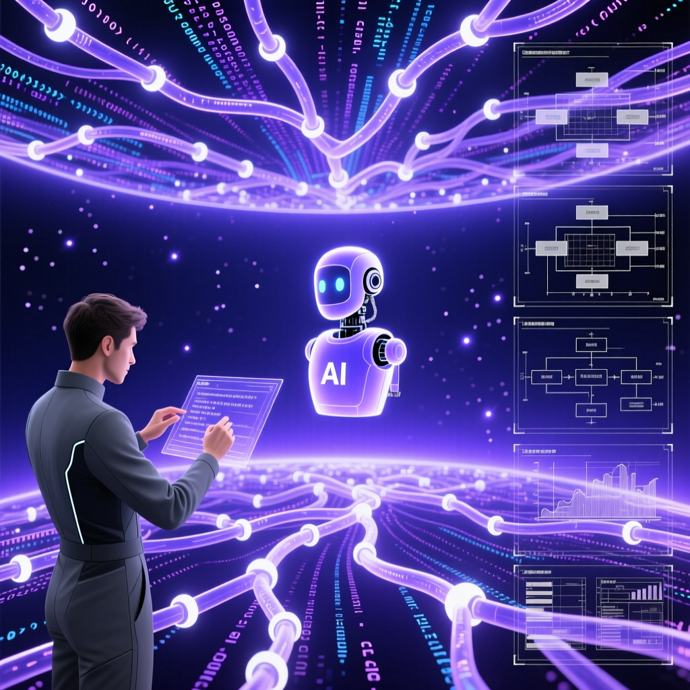

Andrej Karpathy 在紅杉 AI Ascent 2026 大會上，以自身一年多的真實開發體驗，拆解從軟件1.0到軟件3.0的躍遷、智慧體工程的崛起，以及人類在AI時代真正不可替代的價值。

卡帕西直言：作為一名寫了十幾年代碼的頂級程序員，自己從未像現在這樣感到落後。這種「落後感」來自軟件開發正在經歷的根本性轉變——從軟件1.0到軟件3.0的代際躍遷。
「智能體生成的代碼片段，質量已經達到了近乎完美的程度。」
— Andrej Karpathy，2026年4月卡帕西分享了他的真實體驗：自從Cursor這類智慧體工具發布以來，他持續使用了一年多。2025年12月是一個轉折點——在最新一代大模型的加持下，智慧體生成的代碼質量發生了質的飛躍。
這個轉變代表著軟件開發的三個階段：
程式設計師用代碼明確描述每一個邏輯分支，無論多細節都需要手工編寫。這是傳統的、確定性的軟件開發模式。
神經網路開始承擔部分工作，人類提供數據和目標，讓模型自己找出解決方案。深度學習主導的階段。
神經網路完全取代CPU成為系統主體，傳統程式設計師的角色正在被重新定義。智慧體成為核心執行單元。
卡帕西提出的新概念：用自然語言描述系統意圖，讓AI自己推導實現細節。人類從「寫代碼」轉向「指揮AI寫代碼」。
卡帕西指出，智慧體工程面臨三個主要挑戰，這些挑戰導致AI能力呈現「鋸齒化」缺陷：
智慧體在執行複雜任務時，成功率並非線性提升，而是呈現階梯式的「有時完美、有時失誤」的鋸齒形態。
傳統軟件開發中，計算以CPU為中心，程式設計師編寫明確的指令序列。而在軟件3.0時代：
「當智能變得廉價時，我們最值得深度學習的應該是理解力。AI是理解力的放大器，但是真正的理解，只能發生在人類的大腦裡。」
— Andrej Karpathy卡帕西強調，在AI時代，人類的最終決策者角色不可替代：
人類決定系統的目標和方向，這需要價值判斷和創造力。
需要人類的判斷力、經驗和對業務目標的深刻理解。
人類作為系統的最終決策者，需要理解力來駕馭AI。
理解力決定了你能駕馭多大的價值和多大的系統。
卡帕西的核心訊息：軟件正在經歷從1.0到3.0的根本性躍遷。傳統程式設計師的角色正在被重新定義——從「寫代碼者」變成「系統指揮者」。在這個轉變中，人類最不可替代的能力是理解力：理解系統在做什麼、判斷是否值得做、決定要構建什麼。
當智能變得廉價時，真正有價值的是人類的判斷力、創造力和對業務目標的深刻理解。AI是理解力的放大器，但真正的理解只能發生在人類的大腦裡。